GLM mediation models
jAMM module for mediation models
Draft version, mistakes may be around
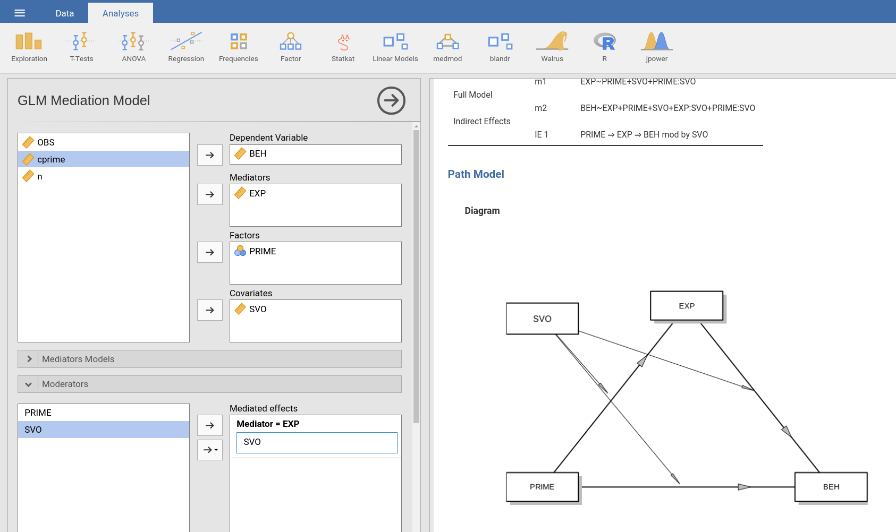
The module estimates simple, multiple, and conditional mediation models with maximum likelihood regression. It encompasses models with continuous and categorical independent variables.
Variable role definition
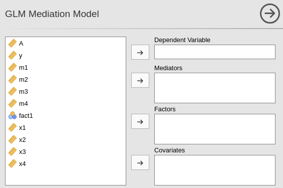
To estimate a model, the user should define: a dependent variable, one or more mediators, one or more independent variables. Independent variables can be continuous (going in Covariates) or categorical (going in Factors). In case one or more variables is a moderator, it should first be included in the independent variables fields, and then defined as moderator (in Moderators tab).
Model building
When one defines the roles of the variable, jAMM tries to guess what model the user is estimating, with very simple rules. The independent variables are all considered parallel indepenent variables. The mediators are all inserted in the model as parallel mediators. All effects from the independent variables through the mediators are estimated. In other words, by default the module builds a multiple IV, multiple mediators model, like the example in the Figure with 2 IV and 2 mediatiors. In the simple case of three variables model (simple mediation), one obtains the standard mediation trianglular model.
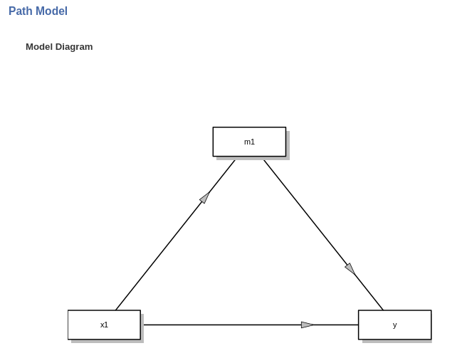
When there are more independent variables and mediatiators, the rules described above apply. For two IV and two ME, the default model is as in the following Figure.
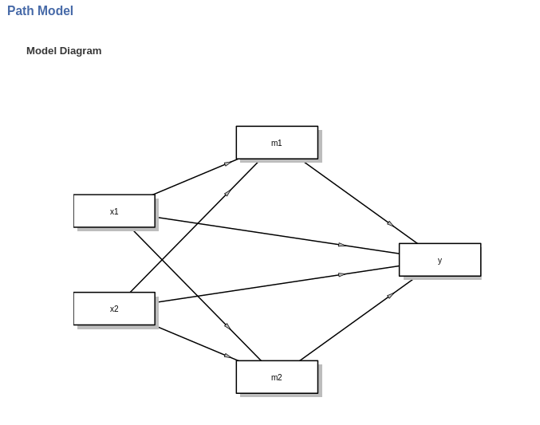
The structure of the model can be changed in the Mediators models and Full model tabs. See jAMM: Model building for examples on building models.
Mediators models
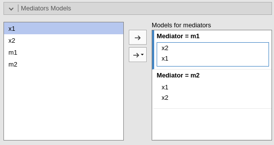
The tab shows the mediators models, the models with mediators as dependent variable. On the right (Models for mediators) one field for each mediator is shown. There, the user can define the predictors of each mediator. See jAMM: Model building for examples on building models.
Full model
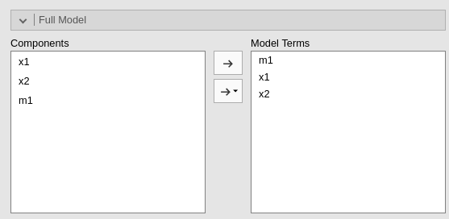
The tab shows the full model, that is the model predicting the dependent variable. On the right (Model terms), oen can put all the model terms required. By default, jAMM puts in the model terms all the mediators and the mediators predictors. See jAMM: Model building for examples on building models.
Results
Models Info
When variables roles are yet not defined, the table shows some suggestions to get the user started. When the variables and the models are defined, the table shows the linear equations needed to estimate the model, and the indirect (mediated) effects involved in the model. If something goes wrong with the model specification, warnings are issued. The main reason a warning is issued is the specification of an incomplete or absurd model. The path diagram also signals problems in the model.
Diagram
Upon defining variables and models terms, the path diagram is generated. This type of diagram is often called model diagram or conceptual model as opposed to the working model, which shows all terms and all estimated statistical paths. Without moderators, the model diagram corresponds to the working model but does not show the covariances between independent variables.
The diagram shows the model implied by the Mediators models and the Full model terms. The estimated paths (coefficients) are shown in black. Required variables or required paths are shown in red. A required path, for instance, can be a path from the IV to the mediator. The diagram also shows impossible paths in purple. Impossible paths are paths that do not make sense in terms of mediation, not necessarily in terms of statistical estimability. For instance, a model with two mediators m1 and m2, in which the user defines a path from m1 to m2 and a path from m2 to m1 is deemed as impossible, because this king of models are not mediation models. An example is in the Figure.
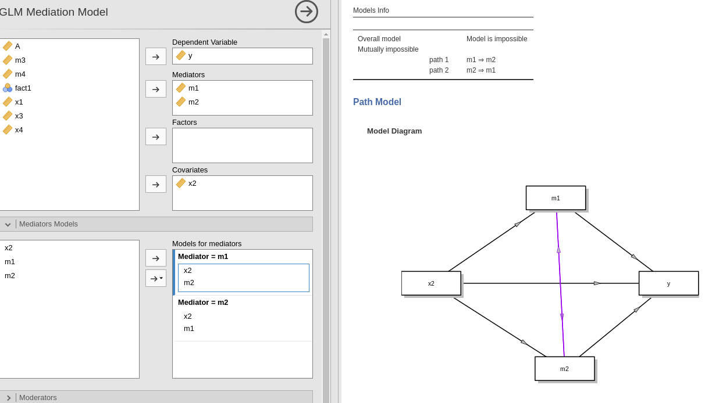
The diagram also shows suggested paths (in green). Those are paths whose absence does not invalidate the model, but may require extra care in interpreting the results. Suggested paths may be hidden in the Mediation options tab.
Effect estimates
For models without interactions, jAMM produces a table showing the Indirect effects (mediated), the Direct effects, and the Total effects. The example below shows results for a model with one IV (x1), two parallel mediators (m1, m2) and a DV (y).
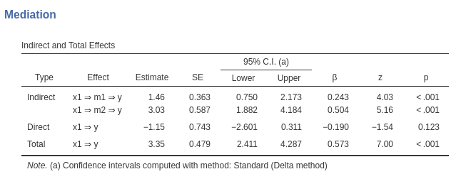
Indirect effects are the mediated effects. The Effect column indicates which mediated effect is shown in the corresponding row. Estimate reportes the estimation of the mediated effect. The columns are self-explanatory. See jAMM: Model estimates for details.
The direct effects are the effects computed keeping the mediators constant, thus the un-mediated effects. The total effects are the effects computed without the mediators, or, equivalently, the sum of the indirect and the direct effects.
If requested in the Mediation options tab by ticking Components one can see in the table also the components of the indirect effects. The components are the coefficients that are multiplied to obtain the indirect effects. In simple mediation, for instance, if the models are \(m=a \cdot x\) and \(y= b \cdot m + c \cdot x\), the mediated effect is \(IE=a \cdot b\) and \(a\) and \(b\) are its components.
In the example shown in the table above, asking the Components yields:
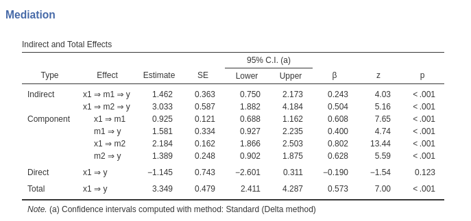
Moderators
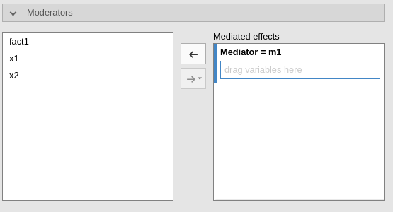
Moderators are variables expected to moderate the indirect effects. In the tab, one can define one or more moderators for each mediator. That is equivalent to declaring one or more moderators for each IE. When a moderator is defined, jAMM updates the Mediators models and the Full model to include the interactions required to build the model. The user can then tweak the model, but also completely change it, by changing the terms in the Mediators models and the Full model tabs.
Declaring the moderator(s), however, triggers jAMM to nicely display the moderator in the model diagram and to compute simple indirect effects, that is, indirect effects computed at different levels of the moderators. What levels are used is ruled by Factor coding and Covariates scaling options.
Two important caveats should be noted:
1) Adding moderators
To add a moderator, there should be at leat another independent variable in the medatiators models. For example, if the user defines x1 and x2 in the mediators models, jAMM allows one of them (say x1) to be a moderator. However, if the user tries to add also x2 as moderator, a warning is issued because with two moderators, there are no IV left to be moderated. An example is in the Figure shows the warning that appears if the user tries to add x2 as a moderator of the model.
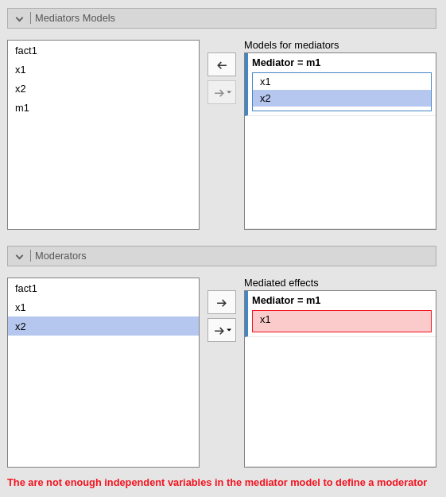
See jAMM: Building conditional models for examples on building models with moderators.
2) Interactions without moderators
jAMM allows to define interactions in the model without specifying a moderator (see example in the following Figure).
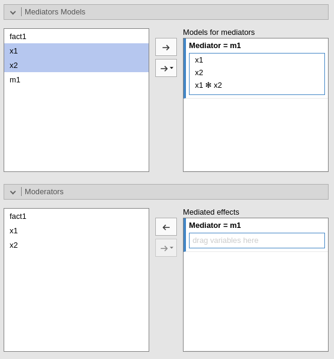
This feature allows users to define an interaction effect that will be treated as an additional term of the mediation model. Thus, no simple indirect effects will be computed. Nontheless, the model may be perfectly fine and the user may have good reasons to insert an interaction without explicitely define a moderator. The feature also allows estimating very complex models with several interactions, not all of them interesting from the point of view of the mediated effects.
See jAMM: Building conditional models for examples on building models with moderators.
Factors coding

It allows to code the categorical variables according to different coding schemas. The coding schema applies to the parameter estimates, simple effects and plots. The Omnibus Tests (ANOVA) table uses always the “deviation” scheme, that is “-1 0 1” coding, which results in a correct Type III analysis.
Note that all contrasts but dummy guarantee to be centered to zero (intercept being the grand mean), so when involved in interactions the other variables coefficients can be interpret as (main) average effects. If contrast dummy is set, the intercept and the effects of other variables in interactions are estimated for the first group of the categorical IV.
Contrasts definitions are provided in the estimates table. More detailed definitions of the comparisons operated by the contrasts can be obtained by selecting “Show contrast definition table”.
Differently to standard R naming system, contrasts variables are always named with the name of the factor and progressive numbers from 1 to K-1, where K is the number of levels of the factor.
In reading the contrast labels, one should interpret the (1,2,3) code as meaning “the mean of the levels 1,2, and 3 pooled toghether”. If factor levels 1,2 and 3 are all levels of the factor in the samples, (1,2,3) is equivalent to “the mean of the sample”. For example, for a three levels factor, a contrast labeled 1-(1,2,3) means that the contrast is comparing the mean of level 1 against the mean of the sample. For the same factor, a contrast labeled 1-(2,3) indicates a comparison between level 1 mean and the subsequent levels means pooled together.
More details and examples .
Covariates Scaling

Continuous variables can be centered, standardized or used as they are (none). The default is centered because it makes our lives much easier when there are interactions in the model. If one needs to unscale the variable, simply select none.
Covariates conditioning rules how the model is conditioned to different values of the continuous independent variables when one or more moderators are defined.
Mean+SD: means that the IV is conditioned to the \(mean\), to \(mean+k \cdot sd\), and to \(mean-k\cdot sd\), where \(k\) is ruled by the white field below the option. Default is 1 SD.Percentile 50 +offset: means that the IV is conditioned to the \(median\), the \(median+k P\), and the \(median-k\cdot P\), where \(P\) is the offset of percentile one needs. Again, the \(P\) is ruled by the white field below the option. Default is 25%. The default conditions the model to:\(50^{th}-25^{th}=25^{th}\) percentile
\(50^{th}\) percentile
\(50^{th}+25^{th}=75^{th}\) percentile
The offset should be within 5 and 50.
Covariates labeling decides which label should be associated with the estimates and table titles:
Labelsproduces strings of the form \(Mean \pm SD\)Valuesuses the actual values of the variablesLabels+Valuesproduces labels of the form \(Mean \pm SD=XXXX\), whereXXXXis the actual value.
[to be continued]
List of docs
Examples
Some worked out examples of the analyses carried out with jamovi jAMM are posted here (more to come)
If you are intested in checking the convergence of jAMM results with other software results, please visit:
Comments?
Got comments, issues or spotted a bug? Please open an issue on GAMLj at github“ or send me an email